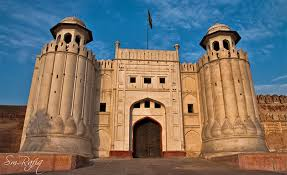

HOME NEXT
Top sights in Pakistan
Badshahi Mosque

The Badshahi Mosque in Lahore was commissioned by the sixth Mughal Emperor Aurangzeb. Constructed between 1671 and 1673, it was the largest mosque in the world upon construction. It is the second largest mosque in Pakistan and the fifth largest mosque in the world.
It is Lahore's most iconic and famous landmark and a major tourist attraction. Aurangzeb's mosque's architectural plan is similar to that of his father, Shah Jehan, the Jama Masjid in Delhi; though it is much larger. it also functions as an idgah. The courtyard which spreads over 276,000 square feet, can accommodate one hundred thousand worshippers; ten thousand can be accommodated inside the mosque. The minarets are 196 feet (60 m) tall. The Mosque is one of the most famous Mughal structures, but suffered greatly under the reign of Maharaja Ranjit Singh. In 1993, the Government of Pakistan included the Badshahi Mosque in the tentative list for UNESCO World Heritage Site.
The mosque is located in the Walled City of Lahore, Pakistan, just opposite to the Alamgiri Gate of the Lahore Fort. The Hazuri Bagh separates the mosque and the fort. On the Eastern side of the garden is one of the thirteen gates of Lahore, The Roshnai Gate.[3] TheTomb of Muhammad Iqbal lies beside the mosque.
The mosque was constructed by the sixth Mughal emperor Aurangzeb, who, unlike the previous emperors, was not a patron of art and architecture. He built the mosque between 1671 and 1673 under the guidance of Fidai Khan Koka, his "master of ordinance".
On 7 July 1799, the Sikh army of the Sukerchakia chief, Ranjit Singh, took control of Lahore. After the capture of the city, the Badshahi mosque was desecrated by Ranjit Singh, who used its vast courtyard as a stable for his army horses, and its 80 hujras (small study rooms surrounding the courtyard) as quarters for his soldiers and as magazines for military stores. Ranjit Singh used the Hazuri Bagh, the enclosed garden next to it, as his official royal court of audience. In 1818, he built a marble edifice in the garden facing the mosque.
In 1841, during the First Anglo-Sikh War, Ranjit Singh's son, Sher Singh, used the mosque's large minarets for placement of zamburahsor light guns. It was used to bombard the supporters of Chand Kaur taking refuge in the besieged Lahore Fort, inflicting great damage to the fort itself. In one of these bombardments, the fort's Diwan-e-Aam (Hall of Public Audience) was destroyed (it was subsequently rebuilt by the British but it could not be exactly restored in the previous state). During this time, Henri De la Rouche, a French cavalry officer employed in the army of Sher Singh, used a tunnel connecting the Badshahi mosque to the Lahore fort to temporarily store gunpowder.
In 1849 during the British Raj, the British continued using the mosque and the adjoining fort as a military garrison. The 80 cells (hujras) built into the walls surrounding the its vast courtyard on three sides were originally study rooms, which were used by the Sikhs under Ranjit Singh to house troops and military stores. The British demolished them so as to prevent them from being used for anti-British activities and rebuilt them to form open arcades or dalans.
Because of increasing Muslim resentment against the use of the mosque as a military garrison, the British set up the Badshahi Mosque Authority in 1852 to oversee the restoration and to re-establish it as a place of religious worship. From then onwards, piecemeal repairs were carried out under the supervision of the Badshahi Mosque Authority. Extensive repairs commenced from 1939 onwards, when Sikandar Hayat Khan took on the task of raising funds for this purpose.
It was not until 1852 that the British established the Badshahi Mosque Authority to oversee the restoration of the mosque as a place of worship. Although repairs were carried out, it was not until 1939 that extensive repairs began, supervised by the architect Nawab Zen Yar Jang Bahadur. The repairs continued until 1960 and were completed at a cost of 4.8 million rupees.
On the occasion of the 2nd Islamic Summit held at Lahore on 22 February 1974, thirty-nine heads of Muslim states offered their Friday prayers in the Badshahi Mosque, including, among others, Zulfiqar Ali Bhutto of Pakistan, Faisal of Saudi Arabia, Muammar Gaddafi of Libya,Yasser Arafat of the Palestine Liberation Organization and Sabah III Al-Salim Al-Sabah of Kuwait. The prayers were led by Mawlānā Abdul Qadir Azad, the then khatib of the mosque.
Between 1939 and 1960, the mosque was repaired to bring it back to its original condition. In 1993, the Government of Pakistan included the Badshahi Mosque in the tentative list for UNESCO World Heritage Site.
In 2000, the marble inlay in the main prayer hall was repaired. In 2008, replacement work on the red sandstone tiles on the mosque's large courtyard commenced, using red sandstone especially imported from the original source near Jaipur, India, bringing it to be nearly restored.
Faisal Mosque

The Faisal Mosque (Urdu: فیصل مسجد, romanized: faisal masjid) is the national mosque of Pakistan, located in the capital city, Islamabad.[1][2] It is the fifth-largest mosque in the world, the largest mosque outside the Middle East, and the largest within South Asia, located on the foothills of Margalla Hills in Islamabad. It is named after the late King Faisal of Saudi Arabia. The mosque features a contemporary design consisting of eight sides of concrete shell and is inspired by the design of a typical Bedouin tent.[3] A major tourist attraction in Pakistan, the mosque is a contemporary and influential piece of Islamic architecture.[4][5] Construction of the mosque began in 1976 after a $28 million grant from Saudi King Faisal, whose name the mosque bears.[6] The unconventional design by Turkish architect Vedat Dalokay was selected after an international competition.[7][4] Without a typical dome, the mosque is shaped like a Bedouin tent, surrounded by four 260 feet (79 m) tall minarets. The design features eight-sided shell shaped sloping roofs forming a triangular worship hall which can hold 10,000 worshippers.[8] Combined the structure covers an area of 33 acres (130,000 m2; 1,400,000 sq ft), the mosque dominates the landscape of Islamabad.[6] It is situated at the north end of Faisal Avenue, putting it at the northernmost end of the city and at the foot of Margalla Hills, the westernmost foothills of the Himalayas. It is located on an elevated area of land against a picturesque backdrop of the national park. Faisal Mosque was the largest mosque in the world from 1986 until 1993 when it was overtaken by the mosques in Saudi Arabia. Faisal Mosque is now the sixth largest mosque in the world in terms of capacity.[9][10]
Wagah Border

Wagah (Punjabi: واگھا; Urdu: واہگہ), also spelled Wagha, is a village and union council (UC 181) located in the Wahga Zone near Lahore City District, Pakistan.[1] The town is famous for the Wagah border ceremony and also serves as a goods transit terminal and a railway station between Pakistan and India.[2] Wahga is situated 600 metres (2,000 ft) west of the border and lies on the historic Grand Trunk Road between Lahore and Amritsar in India. The border is located 24 kilometres (15 mi) from Lahore and 32 kilometres (20 mi) from Amritsar. It is also 3 kilometres (1.9 mi) from the bordering village of Attari, India. The Wagah ceremony takes place every evening.The border crossing draws its name from Wahga village, near which the Radcliffe Line, the boundary demarcation line dividing India and Pakistan upon the Partition of British India, was drawn.[3] At the time of the independence in 1947, migrants from India entered Pakistan through this border crossing and vice versa. The Wagah railway station is 400 metres (1,300 ft) to the south and 100 metres (330 ft) from the border. The Wagah-Attari border ceremony happens at the border gate, two hours before sunset each day.[3] The flag ceremony is conducted by the Pakistan Rangers and Indian Border Security Force (BSF), similar to the retreat ceremonies at Ganda Singh Wala/Hussainiwala border crossing and Mahavir/Sadqi International Parade Ground border crossing. A marching ceremony, known as the "Silly Walk ceremony", is conducted each evening along with the flag ceremony. The ceremony started in 1986 as an agreement of peace, although there was not a conflict at that time. Other Middle East nations have adopted similar ceremonies in recent years. Following India's erection of a 360 ft (110m) flagpole on their side of the border in Attari and a stadium with Balcony Gallery overarching the Pakistani side of 25000 seating capacity for Indians and visitors, in August 2017, a 400 ft (122m) Pakistani flag was installed on the Wagah side.There is no stadium on the Pakistani side like that of India’s. The pole in pattadei is the largest in India.
Margalla Hills

The Margalla Hills (Urdu: مارگلہ پہاڑیاں) are a hill range within the Margalla Hills National Park on the northern edge of Islamabad Capital Territory, Pakistan, just south of Haripur District, Khyber Pakhtunkhwa. They are part of the Himalayan foothills. The Margalla range has an area of 12,605 hectares.[1] It is a range with many valleys as well as high mountains. According to the research carried out by scientists and archaeologists of the project "Post-Earthquake Explorations of Human Remains in Margalla Hills", the formation of the Margalla Hills dates to the Miocene epoch. The dominant limestone of the Margalla is mixed with sandstone and occasional minor beds of shale. The archaeologists of the project have also found two human footprints over one million years old here, preserved in sands. The Shah Allah Ditta Caves are also part of its ancient history. This cave is about 2500 years old and is believed that Alexander The Great as well as several other emperors used this route to either pass by or pass into this area. The cave also have Buddhist-era murals which date at least 2400 years old. The cave has seven alcoves which of different sizes for lamps which are still conserved today. Furthermore, one of the paintings found with the cave was of the Hindu god Shiva.[2] There are around 250 to 300 species of plants on the Margalla Hills. As many as two-thirds of them are used by the people for their medicinal effects to treat or cure various diseases.[3] The Margalla Hills are home to various species of wildlife, including monkeys, exotic birds and carnivores such as the rare and presently endangered Margalla leopard.[4] Much less common are leopards, which occasionally come down from the Murree area but usually remain high up in the hills. Villagers dwelling in the Margallas do report sighting of leopards off and on.[5] The Margallas are an excellent place for bird watchers. The area is home to a large number of birds, including robins, sparrows, kites, crows, larks, paradise flycatchers, black partridge, shrikes, pheasants, spotted doves, Egyptian vultures, falcons, hawks, eagles, Himalayan griffon vulture, laggar falcon, peregrine falcon, kestrel, Indian sparrow hawk, white cheeked bulbul, yellow vented bulbul, cheer pheasant, khalij pheasant, golden oriole, collared dove, wheatears and buntings.[4] The cheer pheasant, indigenous to the Khyber Pakhtunkhwa, was being reared in Margalla Hills as a part of conservation campaign by the World Pheasant Association and Capital Development Authority.[6]
Lahore Fort
Lahore Fort, fortified complex in Lahore, Pakistan, comprising mosques and palaces built by Mughal emperors. The fort stands as one of the prime examples of Mughal architecture. The history of Lahore Fort reaches back into the recesses of Indian history, with excavations at the site suggesting it was inhabited before the conquest of Lahore by Maḥmūd of Ghazna in 1021. The substantial and imposing structure seen today was added to over the centuries, starting most significantly in 1566 when the Mughal emperor Akbar replaced and extended the existing mud-built fort with one of brick masonry and red sandstone. Lahore was an important city in the Mughal Empire, strategically located between the other great Mughal strongholds of Kashmir, Kabul, and Multan. It was also the site of the first Mughal conquests in India, so it was both fitting and necessary for the city to boast a grand and functional fort. Following Akbar’s initial rebuilding, the successive emperors—Jahāngīr, Shah Jahān, Aurangzeb, and Maharaja Ranjit Singh—greatly enhanced the fortification by adding new and highly decorative buildings. The layout is strictly organized and not dissimilar to that of the Agra Fort, with areas divided into private and public (administrative) sections. The palatial private quarters occupy the northern side and are accessed through the Elephant Gate, while the public areas used by the emperors for state occasions are accessed via the impressive Alamgiri Gateway built by Aurangzeb. The monumental gates, which substantiate the power and prestige of the different emperors, also needed to allow for an elephant carrying members of the royal family to pass through them. Shah Jahān is remembered for his love of ornate and opulent architecture—he also built the Taj Mahal. The fort’s Hall of Mirrors (Shish Mahal) and white marble Naulakha Pavilion are other examples of his elaborate style. The latter features dazzling mosaics of semiprecious stones (pietra dura) in intricate floral motifs. The Naulakha Pavilion’s name comes from nine lakh, meaning 900,000—which may refer to the number of rupees it cost to build the pavilion or the number of stones used in its mosaic work. Shah Jahān was also the first to build a Mughal mosque inside the fort, again crafted from white marble, which has become a distinctive feature of the fort complex. Lahore Fort was designated a UNESCO World Heritage site in 1981.